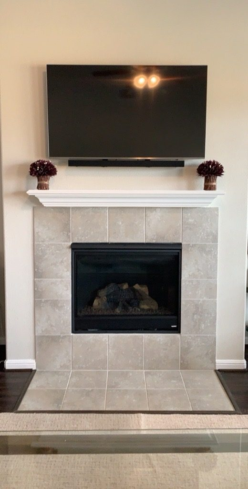
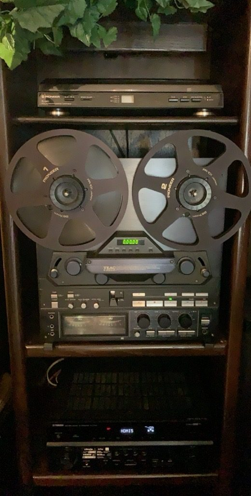

Tailored AV and IT
Screens, sound, Wi-Fi and cabling for restaurants, offices and shops across Fort Bend County. Homes too.
One person, start to finish
The person who surveys your site is the person who installs it, and the one who answers when you call afterwards. No crews you have never met, no subcontractors, no ticket queue.
- Eighteen years
- installing commercial and home AV
- Five years
- running managed IT for businesses
- IT director
- by day, so networks are planned like an IT department would
- One business day
- to hear back after you get in touch
Built for businesses first
-
Restaurants and bars
Any game on any screen, separate music for the bar, dining room and patio, and a POS that never shares a network with guest Wi-Fi.
Video-matrix TV walls, zoned background music, outdoor-rated patio TVs and speakers. Installed before open or after close.
-
Offices and conference rooms
Rooms where Teams and Zoom start on time: one way to join, one way to share. Backed by office Wi-Fi and Microsoft 365 set up properly.
Displays and video bars, wireless sharing, ceiling microphones, cabling to every desk, Microsoft 365 users and email security.
-
Retail and showrooms
Displays that look built in, not bolted on. Background music that fills the floor without blasting the counter.
Flush feature-wall displays, scheduled promo screens, zoned music, guest Wi-Fi kept apart, UniFi cameras with local storage.
-
Digital signage and menu boards
Change a price or switch lunch to dinner from your phone, on a schedule, without a ladder. Your staff runs it after a short handover.
Menu boards for counters and drive-thrus, lobby and wayfinding screens, day-part scheduling, screens that follow your hours.
-
Business Wi-Fi and networks
Access points placed for your floor plan, with the POS, cameras, staff and guests on separate networks. Managed month to month if you want.
UniFi access points, switches and firewall, separate VLANs, guest Wi-Fi that cannot reach business systems, remote monitoring.
Not our work. A closet like this is where a network survey starts. Photo: sampsyo, CC BY 2.0. -
Structured cabling and low voltage
Data drops, racks and pre-wire for TVs, speakers, access points and cameras. Labeled and documented at closeout, as your sub or direct.
Cat6 drops and patch panels, rough-in at framing and trim-out after paint, retrofits in finished spaces with patched penetrations.
Not our work. Every port labeled: the standard Mark holds a closet to. Photo: Derrick Coetzee, CC0.

Homes, to the same standard
The same level lines and hidden wires, at home. You get an exact itemized price before any work starts.
- TV mounting
- from $150
- Whole-home audio
- from $800
- Home Wi-Fi and networks
- from $500
- Smart home
- from $300
- Home theater
- from $2,000

How a job goes
You get in touch
Call, text or send the form. You hear back within one business day.
Mark surveys the site
Thirty to forty-five minutes on site, free, no obligation. He looks at the walls, the power, the network closet and how the room is used.
You get an itemized quote
Every line priced before work starts, so the number you get is the number you pay.
The install fits your hours
Before open, after close or on weekends. Cables labeled, holes patched, staff shown how it works.
The same person answers after
Call for service as needed, or cover it with a month-to-month care plan.
What does the survey check?
On a restaurant or bar survey, Mark checks:
- How many TVs, how big, and where every seat looks
- Whether any source needs to reach any screen
- Wall types and how far cable has to run
- Music zones, and whether the patio needs outdoor speakers
- How the POS, cameras and guest Wi-Fi are split today
On an office survey, Mark checks:
- Room size and how many people it seats
- Display size, and whether a video bar or ceiling microphones fit
- Teams or Zoom room licensing
- How many desks need cabling or Wi-Fi coverage
- Whether Microsoft 365 needs a fresh setup or a migration
On a retail or showroom survey, Mark checks:
- How many displays, and whether they mount flush, recessed or standard
- Whether screens need scheduled content
- How many background-music zones
- The square footage the Wi-Fi has to cover
- How many cameras, and how many days of recording you want
On a signage or menu board survey, Mark checks:
- How many screens and media players
- Indoor screens, or outdoor-rated and drive-thru displays
- Which signage software suits the people updating it
- Whether new power and data runs are needed at each screen
On a business Wi-Fi survey, Mark checks:
- Square footage, and what the walls are made of
- How many access points and switches it takes
- Firewall and network separation needs
- Whether cabling already reaches the access point spots
- Whether you want it managed after install
On a cabling or new-build survey, Mark checks:
- How many drops, and how far each run is
- Open framing, or finished walls and ceilings
- Rack, patch panel and cable management needs
- How many floors, and how runs get between them
- How the work is phased around the build schedule
On a home survey, Mark checks:
- TV size and the wall: drywall, brick, stone or tile
- Whether cables can run inside the wall
- Whether an outlet needs adding behind the TV
- Speaker spots, room size and seating for audio or a theater
- Where the Wi-Fi drops out today
Mark Immler
Mark has installed AV for eighteen years and run managed IT for five. By day he is an IT director, which is why the network under every install is separated, documented and secured the way an IT department would want it.
Dapper means well dressed. On a job that means level screens, hidden wires and every cable labeled, with one person accountable for all of it.
Based in Richmond. Working across Rosenberg, Fulshear, Sugar Land, Stafford and Katy.
“Super detailed and extremely knowledgeable! Mark is amazing. Did the install for my business speakers super quick and he is also super neat an[d] clean!”
“He is methodical and you can see that he cares to do it right and provide for you the best solution.”
These are the two Google reviews Dapper AV has so far, both five stars. Read them in full on Google.
Book a site survey
Tell Mark about the space, and he will come and look at it, free.